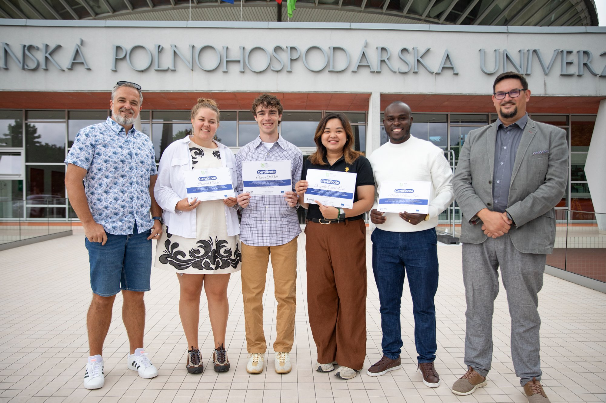

Exploring how behaviour shapes food systems
I study the intersection of economics, human behaviour, and food safety in developing contexts. Currently an Erasmus Mundus scholar at Ghent University, I work on understanding why small-scale producers and vendors adopt (or resist) food-safety practices—and what that means for policy.
My academic path has taken me from Kenya to China to Europe. I hold a BSc from Karatina University and an MSc from the Chinese Academy of Agricultural Sciences, and I am currently completing the Erasmus Mundus International Master in Rural Development, splitting time between Ghent, Slovakia, and France.
Before returning to academia, I spent nearly three years as an Agricultural Economist with the Kisii County Government, where I led field-level value-chain analyses, built data dashboards, and helped secure grant funding for smallholder programmes. Earlier, I interned at World Agroforestry (ICRAF) in Nairobi, working on post-harvest loss reduction and agroforestry economics.
My current research uses an extended Theory of Planned Behaviour framework to examine food-safety practice adoption among umqombothi vendors in South Africa's informal markets. I'm broadly interested in how behavioural economics can inform better food-system policies in the Global South.

I'm open to PhD opportunities, research collaborations, and conversations about food systems, rural development, or behavioural economics. Don't hesitate to reach out.